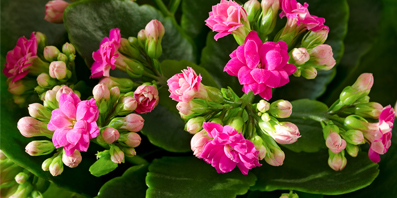
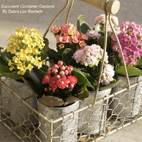

Існує два основних види каланхоє, що гарно цвітуть: каланхоє blossfeldiana і гібриди каланхое malginii.
Найпопулярнішим серед кімнатних каланхоє - каланхоє блосфельда, яка гарно цвіте, інші види розглянемо за допомогою фото.

Каланхоє блосфельда- одна із найпопулярніших квітучих каланхой.
Каланхоє блосфельда - це багаторічна рослина, з грубим листям зеленого кольору (форма листка яйцеподібна), квіти маленькі (до 1см в діаметрі), можуть бути різного кольору: рожеві, жовті, оранжеві і червоні, зібрані у великі суцвіття, що нагадують парасольку. Батьківщиною каланхое блосфельда є острів Мадагаскар.
Цей вид каланхое дуже добре підходить для лікарських кабінетів, дитячих кімнат, де красиві і яскраві квітки зможуть покращити настрій.
